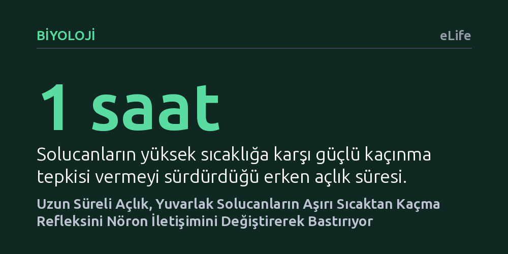

BIYOLOJI · eLife · 2026-10-11
Araştırmacılar, açlığın yuvarlak solucanların yüksek sıcaklıktan kaçma davranışını ve bu davranışın bağlı olduğu sinir devrelerini nasıl etkilediğini inceledi. Uzun süreli açlığın, duyu nöronlarındaki sinyal biçimlerini ve nöropeptit iletimini tersine çevirerek ısıdan kaçınma refleksini neredeyse tamamen ortadan kaldırdığı bulundu.
Açlık gibi temel içsel durumların, canlının tehlikelerden kaçınma refleksini bile sinir devrelerini esnek biçimde yeniden programlayarak bastırabildiğini gösteriyor.

Doğada tüm canlılar, ölümcül tehlikelerden kaçınmak ile besin bulmak arasında sürekli bir denge kurmak zorundadır. Yüksek sıcaklık gibi dokulara zarar verebilecek bir tehditle karşılaşıldığında verilen kaçınma tepkisi, canlının hayatta kalmasını sağlayan en temel reflekslerden biridir. Ancak canlının içsel durumu, özellikle de açlık, bu reflekslerin önceliğini değiştirebilir. Aç kalan bir organizmanın besin bulabilmek için tehlikeli ortamlara katlanması gerekebilir.
Bilim insanları uzun süredir içsel fizyolojik durumların refleks düzeyindeki sinirsel tepkileri nasıl değiştirdiğini anlamaya çalışıyor. Bu mekanizmanın çözülmesi, sinir sisteminin dış dünyadan gelen tehlike sinyallerini katı ve değişmez bir şekilde mi işlediğini, yoksa vücudun anlık ihtiyaçlarına göre esnek bir biçimde yeniden mi yapılandırdığını ortaya koyması açısından büyük önem taşımaktadır.
Araştırma ekibi bu soruyu yanıtlamak için nörobiyolojide yaygın olarak kullanılan ve sinir sistemi bütünüyle haritalandırılmış olan Caenorhabditis elegans adlı mikroskobik yuvarlak solucanı model olarak seçti. Deneylerde solucanlar önce bir saat boyunca besinsiz bırakılarak erken evre açlık durumuna, ardından altı saat boyunca besinsiz bırakılarak uzun süreli açlık durumuna alındı.
Farklı açlık seviyelerindeki solucanlara çeşitli şiddetlerde sıcaklık uyaranları uygulandı ve hayvanların geriye doğru hareket ederek tehlikeden kaçma davranışları kaydedildi. Eş zamanlı olarak, sıcaklığı algılayan AWC duyu nöronlarının ve içsel açlık durumunu izlediği düşünülen ASI nöronlarının kalsiyum sinyalleşmesi ölçülerek hücre içi elektriksel aktiviteleri incelendi.
Deneyler sonucunda, açlık süresine bağlı olarak davranışta belirgin bir değişim saptandı. Yalnızca bir saat aç kalan solucanlar, yüksek sıcaklık karşısında güçlü bir geri çekilme refleksi sergiledi. Bu erken evrede AWC nöronları, glutamat ve FLP-6 adlı nöropeptit aracılığıyla farklı sıcaklık aralıklarında kaçınma davranışını başarıyla yönetti.
Buna karşılık, açlık süresi altı saate ulaştığında solucanların sıcaktan kaçma tepkisi, ortamda besin kokusu olup olmamasından bağımsız olarak neredeyse tamamen kayboldu. İncelemeler, açlığın AWC nöronlarının uyarılma biçimini değiştirdiğini gösterdi; normalde sadece uyarıcı tepki veren bu nöronlar, açlık uzadığında hem uyarıcı hem de baskılayıcı tepkilerin bir arada görüldüğü karmaşık bir yapıya dönüştü.
Bu dönüşümde içsel durumu izleyen ASI nöronlarının belirleyici olduğu anlaşıldı. Erken evrede kaçışı destekleyen INS-32 ve NLP-18 peptit sinyalleri, uzun açlıkta kaçışı engelleyen sinyallere dönüştü. Aynı zamanda AWC nöronunun kaçışı başlatan glutamat salınımı, devreye giren diğer nöronların zıt yönlü glutamat iletimiyle engellendi.
Elde edilen veriler, beslenme durumunun duyusal sinir devrelerini doğrudan yeniden programladığını ortaya koyuyor. Açlık, tehlike algısını tamamen yok etmemekte; duyusal nöronların sinyalleri işleme biçimini değiştirerek organizmanın besin arayışını tehlikeden kaçınma refleksinin önüne geçirmektedir.
Çalışma, sinir sisteminde refleksleri yöneten devrelerin sabit kablolar gibi çalışmadığını, içsel durum değişikliklerine göre çift yönlü kimyasal sinyallerle anbean ayarlandığını kanıtlıyor. Bu temel devre mantığı, içsel fizyolojik ihtiyaçların davranışsal öncelikleri nasıl şekillendirdiğini anlamak için önemli bir biyolojik temel sunmaktadır.